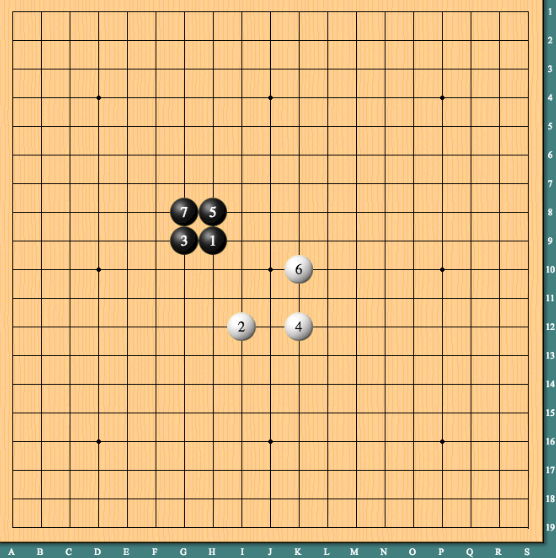

Author: Chu Luo(mr.cluo29@gmail.com) Index.
Game Rules: PDF
Start Game
Game rules in short:
(1) The game is played on the same chess board as Go: 19×19 two-dimensional
grid.
(2) The game is played by two sides. One side uses black stones (game pieces)
and the other side uses white stones. This is also the same as Go.
(3) The black side first places a stone on an empty intersection and then two
sides alternately place stones on empty intersections with their side colors.
However, once a stone is placed, it cannot be removed.
(4) To add difficulty to the black side, the first two stones of the black side
must be adjacent on a line of the grid.
(5) When four stones of a side become the four vertices of a square and the
edges of this square overlap the grid lines, this side wins the game.
For example, the black side wins in the figure below.
